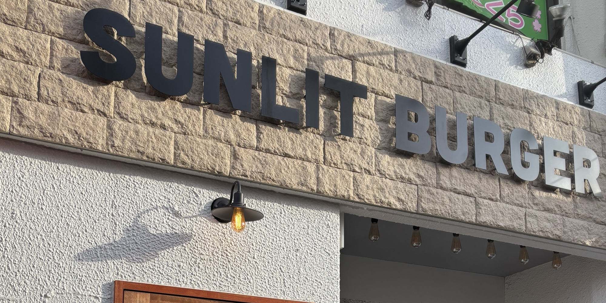

日々過ぎていく、なにげない日常を日記のように記載していく。
- Diary <2023/10/11>
今回は線路沿いにたたずむハンバーガー屋さんに訪れました。

訪れた店は千葉県松戸市八柱にある「SUNLIT BURGER」さん。
最寄り駅は武蔵野線の新八柱駅と新京成電鉄の八柱駅です。

店内はテーブル席が５個とカウンター席が２席ほどでした。

窓際の席からは新京成電鉄の車両を見ることができました。
電車の音を聞きながら、ハンバーガーが来るまで待機。
落ち着いた店内でまったり過ごせます。

ハンバーガーが到着しました。
今回はチーズバーガーをチョイス。

電車を背景に取りたかったけど、来なかったのでそのままパシャリ。

感想としてはパティの挽肉が超粗挽きで厚く、食べ応えがありました。
適度に友人と会話しながら食べていると、こちらのお店はLIVE会場にもなるとのこと。
タイミングが合えば来てみたいですね。
なんやかんやで食べ終わったのでお会計です。
Tシャツなどもレジ横に並んでいました。

とても美味しくまた食べたい味でした。
ごちそうさまでした。
【SUNLIT BURGER】
〒270-2253
千葉県松戸市日暮1丁目2-3 島本ビル1F
定休日：毎週水曜日
営業時間：お店のInstagram参照
↓Instagram↓